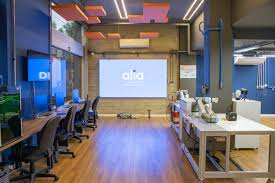
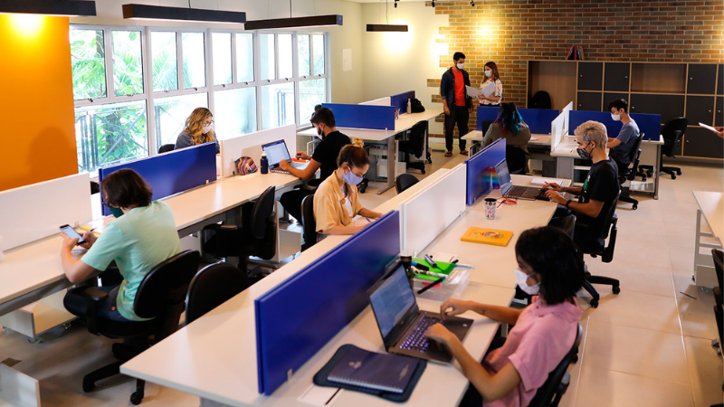
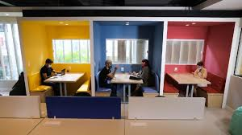

O QUE FAZEMOS
O GDESTE trabalha em três linhas de projetos
Temos aprovado projetos na área de Desenvolvimento e Inovação por meio de editais disponibilizados pelas agências de fomento federais.
DESENVOLVIMENTO E INOVAÇÃO
Contamos com inúmeros projetos no âmbito da Pesquisa por meio de programas institucionais como PIBIC e PIBITI.
PESQUISA
Visando expandir o conhecimento e ter uma experiência educacional promovemos minicursos.
MINICURSOS E TUTORIAIS
EQUIPES
TIME DE SOFTWARE
TIME DE HARDWARE
TIME DE DESIGN
TIME DE ORIENTADORES
PUBLICAÇÕES
TCC
Local: UFPA, Campus Guamá
Ano: 2012
TCC
Local: UFRN, Campus Natal
Ano: 2012
TCC
Local: IFTO, Campus Palmas
Ano: 2012



INSTITUCIONAL

Missão
Produzir artigos paralelamente ao desenvolvimento de protótipos focados nas áreas de conhecimento em voga no laboratório.
Visão
Tornar-se padrão de excelência na produção científica, bem como no desenvolvimento de soluções tecnológicas.

História
O GDESTE foi uma iniciativa dos alunos do curso de Engenharia de Telecomunicações e do curso Técnico em Eletrotécnica, além de alguns professores...
Valores
Compromisso com o resultado, gerenciamento dos recursos, saúde no ambiente de trabalho, boa comunicação entre as áreas, transparência e ética.